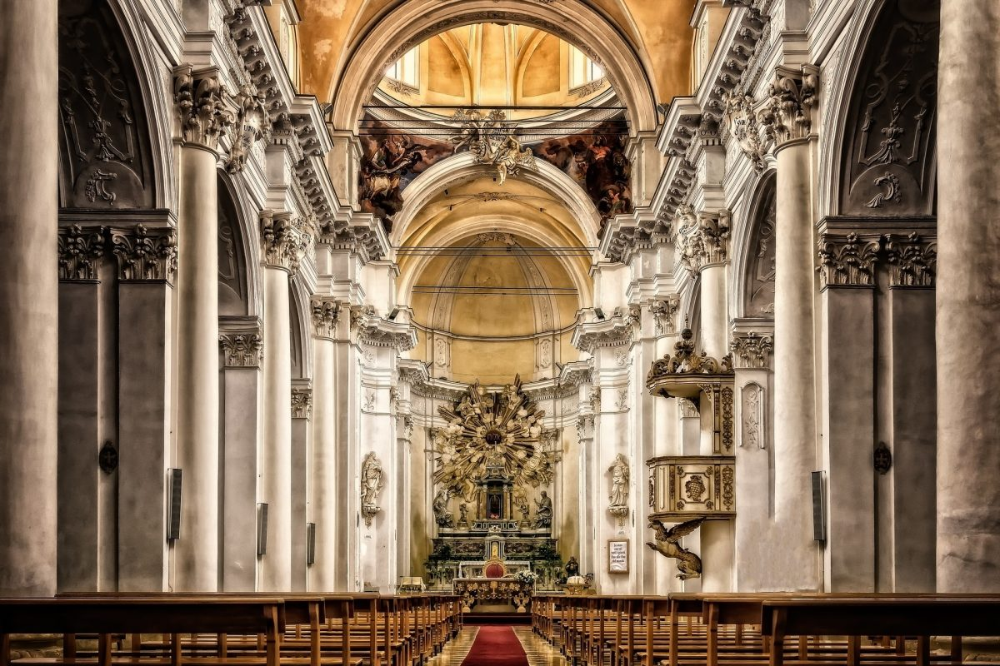

Lakóépületek

Egyházi épületek

A keresztcsűr Kárpát-medence szerte, nem csak falvakan, de mezővárosokban is jellemző beépítési mód, épülettípus. Keresztcsűrös falu: az utcával párhuzamosan álló csűrök vagy pajták az udvarok alján zárt láncolatot alkotnak. A telkek keskenysége miatt a csűrök összeérnek. Várfalszerűen kerítik a lakóházak és gazdasági udvarok két sorát. A pajtasoros szalagtelkes faluba csak a tengelyén végigfutó utca végein lehet bemenni. Másfelől a csűrsor idegenek számára megakadályozza a faluba való bejutást. (Magyar néprajzi lexikon) A keresztcsűr formájában, anyaghasználatában, funkciójában rendkívül változatos, tájegységenként egyedi jellemzőkkel. Leggyakrabban a hossztengelyükre merőlegesen tagolódnak három szakaszra. A középső térrész (szerű) elöl és hátul hatalmas kapukkal záródik, amelyen keresztül a gabonával megrakott szekér is befér, innen tudtak pakolni a két oldalt lévő tárolóhelyiségekbe. (fiók) Ez a gabona feldolgozó-tároló funkció esetenként kiegészül baromfi- vagy disznóóllal, pincével, zöldségesveremmel, műhellyel stb. A csűrök nagyrésze az idők során eltűnt, csak a régi térképeken látjuk még nyomát. Mi legyen a még meglévő épületekkel? Érdemes őket felújítani, új funkcióval ellátni? Érdemes-e ez a beépítésforma arra, hogy új épületként megjelenjen? A Várdob Bt. munkáiból ezekre a kérdésekre adott válaszokból mutatunk be néhány példát.